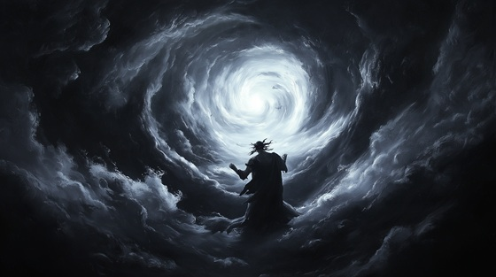

In Greek mythology, Chaos is not disorder, but the infinite void—the original gap from which all of existence emerged. It predates gods, Titans, light, and time. From Chaos came the first primordial entities: Gaia (Earth), Nyx (Night), Erebus (Darkness), and Tartarus (the deep abyss).
Chaos is not a deity in the traditional sense but a state of pure potential and absence. It is the darkness before the cosmos, the breath before the word. From its boundless nothingness, form began to take shape, and the earliest divine forces arose. Gaia gave birth to Uranus (Sky), and together they produced the Titans, setting into motion the generational struggles that define much of Greek mythology.
This mythological moment—when the silent, boundless Chaos fractured to make way for creation—is considered the beginning of the cosmic order, yet it also foreshadows the endless cycle of rebellion and destruction that follows in the age of Titans and Olympians.
The Primordial Wound
Before the fire, before the flame
Before the sky had found its name
I pulsed alone, a breathless sea
No shape, no time, no boundary
Then trembled Earth, then thunder roared
The wound was opened, gods were born
I am the crack where fate began
The silence that defies all man
From me they rose, in me they scream—
The end of void, the birth of dream
I birthed the night, I birthed the light
Gave rise to stars that tear the night
My children clawed the womb of sleep
And chaos whispered secrets deep
Gaia groaned, and sky took form
But still I bleed beneath the storm
I am the crack where fate began
The silence that defies all man
From me they rose, in me they scream—
The end of void, the birth of dream
Erebus came, and Nyx took wing
Together sewed the shadow’s ring
But none recall the soundless cry—
The scream before the first god’s eye
(whispers from Nyx, Gaia, Erebus)
NYX: “You are the breath we never name…”
CHAOS: “And still I burn beneath your flame.”
I am the crack where fate began
The silence that defies all man
From me they rose, in me they scream—
The end of void, the birth of dream
So let them war, and let them rise—
I watch with formless, endless eyes